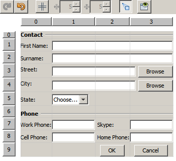

Apache NetBeans
Apache NetBeansLatest release
Criando um Form Java Avançado usando o GridBag Customizer
| This tutorial needs a review. You can open a JIRA issue, or edit it in GitHub following these contribution guidelines. |
Escrito por Jan Stola, Tomas Pavek e Alyona Stashkova
Este tutorial é a segunda série de duas partes que demonstra como criar um form Java usando as funcionalidades avançadas do GridBag Customizer do NetBeans IDE. Esta série tem a intenção de ser um guia para mostrar como é possível criar o layout de seus componentes da GUI sem escrever manualmente seu código de layout e, a seguir, executar alterações adicionais em um form existente para implementar um layout alvo específico que seja necessário ao seu projeto.
Cada documento nesta série aborda conjuntos específicos de funcionalidades.
-
Parte 1: Criando um Form Java Básico usando o GridBag Customizer
-
Parte 2: Criando um Form Java Avançado usando o GridBag Customizer
O primeiro tutorial da série demonstrou como modificar um form Java simples, usando as funcionalidades básicas do GridBag Customizer do NetBeans IDE. Neste tutorial você irá aprender como usar as funcionalidades avançadas do GridBag Customizer para alterar o layout do form existente.

Figure 1. O conteúdo desta página se aplica ao NetBeans IDE 7.1 e posterior
Para seguir este tutorial, são necessários os recursos e o software a seguir.
| Software ou Recurso | Versão Necessária |
|---|---|
7.1 ou posterior |
|
Versão 6, 7 ou 8 |
|
Um arquivo compactado com o projeto de demonstração contendo os layouts inicial e de destino do tutorial. |
Observações:
-
Você pode fazer download do projeto que é usado como um ponto inicial para esta série como um arquivo compactado
.zip. -
Este tutorial concentra-se na criação do layout somente para o contêiner. A adição de funcionalidade na GUI está fora de seu escopo.
Abrindo o Projeto de Exemplo
Antes de começar a efetuar o layout dos componentes com a ajuda do GridBag Customizer, faça o download do gbcustomizer-advanced-tutorial.zip, extraia o projeto GridBagCustomizerAdvancedTutorial em seu disco rígido e abra-o no NetBeans IDE.
-
Faça download e descompacte o projeto gbcustomizer-basic-tutorial.zip em qualquer lugar no computador.
-
Na guia Projetos do NetBeans IDE, clique em Abrir Projeto no menu Arquivo, navegue para o projeto
GridBagCustomizerAdvancedTutorialque você extraiu na etapa anterior e clique em Abrir Projeto. A pasta do projeto pode estar contida em uma pasta que também é chamada deGridBagCustomizerAdvancedTutorial.
Observação: o projeto GridBagCustomizerAdvancedTutorial usa as bibliotecas de classe Junit e JUnit 4 , que estão localizadas na Central de Atualização. Você precisa clicar em Resolver Problemas na caixa de diálogo Abrir projeto, em seguida, clique em Resolver na caixa de diálogo Resolver Problemas de referência e instale o plug-in JUnit seguindo as instruções no Instalador NetBeans IDE. Quando a instalação for concluída, clique em Finalizar para fechar a caixa de diálogo do Instalador do NetBeans IDE e, em seguida, clique em Fechar para fechar a caixa de diálogo Resolver Problemas de Referência.
-
Expanda
Pacotes de Código-fonte > tutoriale clique duas vezes emContactsAdvancedInitial.java. O form de exemplo é aberto na view Design do GUI Builder.

Chamando o GridBag Customizer
Para exibir o GridBag Customizer, conclua as seguintes etapas:
-
Na view Design, selecione o form JFrame.
-
Clique com botão direito do mouse no form e escolha
Personalizar Layout. A caixa de diálogo Personalizar Layout é aberta, conforme mostrado abaixo.

Observação: neste tutorial, o GridBagLayout já está definido. Caso você trabalhe com outro form, na etapa 2 acima, clique com o botão direito do mouse no form e escolha Definir Layout > Layout do Grid Bag (isso ativa o item de menu Personalizar Layout ) e conclua o procedimento.
Funcionalidades Avançadas
Nesta seção, você usará as funcionalidades avançadas do GridBag Customizer para reorganizar os componentes do form ContactsAdvancedInitial de acordo com o layout alvo abaixo mostrado.

Observação: para exibir o layout alvo em seu NetBeans IDE, na guia Projetos, expanda Pacotes de Código-fonte > tutorial e clique duas vezes em ContactsAdvancedFinal.java .
O form ContactsAdvancedFinal com o layout alvo é aberto na view Projeto do GUI Builder.
Inserindo Nova Linha
A seção Telefone de um form existente apresenta três entradas de telefone. Para aprimorá-la e adicionar um campo extra de label e texto (por exemplo, nome do usuário Skype entre Telefone Celular: e Telefone Residencial: ), crie uma nova linha aqui como segue:
-
Na caixa de diálogo Personalizar Layout, clique com o botão direito do mouse no cabeçalho da linha que contém as informações de
Telefone Residencial:. -
Escolha
Inserir Linha Antes.

Uma nova linha é adicionada como na figura a seguir.

Adicionando Novos Componentes
Para adicionar um novo label e campo de texto à linha recém-adicionada, execute as seguintes etapas:
-
Clique com o botão direito do mouse na primeira célula da linha recém adicionada.
-
No menu de contexto, escolha
Adicionar Componentes > Controles do Swing > Label, como mostrado abaixo.

O JLabel1 realçado é exibido na primeira célula.
-
Clique com o botão direito do mouse na segunda célula da linha recém-adicionada.
-
No menu de contexto, escolha
Adicionar Componentes > Controle do Swing >Campo de Texto. OJTextField1realçado é exibido na segunda célula.

Após os componentes terem sido adicionados, suas restrições do gridbag precisam ser especificadas para os alinhar com outros componentes.
Com o componente JTextField1 selecionado na Área da Grade, faça o seguinte na Folha de Propriedades:
-
Na caixa de combinação Largura da Grade, insira
3e pressione Enter. -
Na caixa de combinação Preencher, selecione
horizontal. -
Na caixa de combinação Ancorar, navegue para baixo e selecione
Linha base. -
No campo de texto Espessura X, insira
1.0e pressione Enter.

Na Área da Grade, selecione o componente JLabel1 e especifique sua restrição de Âncora navegando para baixo e selecionando Linha Base à Direita na Folha de Propriedades.
Selecione os dois componentes JLabel1 e JTextField1 na Área da Grade, clique no botão Procurar ( ) à direita do campo de texto
) à direita do campo de texto Insets . A caixa de diálogo Insets é exibida. Insira 5 no campo de texto Superior: e clique em OK.
O form deve se parecer como mostrado abaixo.

Observação: O GridBag Customizer ajuda a adicionar, remover e alterar a posição dos componentes no layout. Para alterar as propriedades dos componentes no layout, como o plano de fundo ou texto, use a janela GUI Builder Design.
Para definir o texto de exibição para o JLabel1 , faça o seguinte:
-
Clique em Fechar para sair da caixa de diálogo Personalizar Layout.
-
Na view Design, selecione o componente
JLabel1e pressione F2 (alternativamente, selecione Editar Texto no menu de contexto). -
Delete o texto selecionado e insira
Skype:. -
Pressione Enter.
Para remover o texto do componente JTextField1 , conclua as seguintes etapas:
-
Na view Design, selecione o componente
JTextField1e pressione F2 (alternativamente, selecione Editar Texto no menu de contexto). -
Delete o texto selecionado e pressione Enter.
Reorganizando o Layout
O GridBag Customizer pode economizar seu tempo e esforço ao reposicionar rapidamente os componentes do form como desejado.
Para alterar o layout da seção Telefone e posicionar quatro campos de texto existentes de uma coluna para duas colunas com dois campos de texto, conclua as seguintes etapas:
-
Clique com o botão direito do mouse no form e escolha
Personalizar Layouta partir do menu de contexto. -
Na caixa de diálogo Personalizar Layout, pressione Ctrl+clique nos quatro componentes
JTextFieldpara selecioná-los. -
Arraste a borda esquerda dos campos de texto para a esquerda e solte-os para que os campos de texto ocupem apenas a segunda coluna de grade, em outras palavras, para que eles não mais ocupem a terceira e quarta coluna de grade.

O GridBag Customizer pode redimensionar diversos componentes juntos, portanto, criando espaço para a segunda coluna de campos de texto.
-
Clique fora do form para cancelar a seleção dos campos de texto redimensionados.
-
Pressione Ctrl e clique para selecionar todos os
Skype:eTelefone Residencial:dos componentesJLabeleJTextFieldna seçãoTelefone. -
Posicione o cursor sobre a seleção e arraste-o para a direita dos dois campos superiores de texto.

Observação: Antes de arrastar, assegure-se de que o cursor não mudou para uma seta de duas direções, caso contrário, você redimensionará a seleção.
Após mover os componentes, o form deveria se parecer com o exibido abaixo.

Para descartar as linhas 10 e 11 redundantes (índices de linha 9 e 10 respectivamente), clique com o botão direito do mouse nos cabeçalhos das linhas e escolha Excluir Linha no menu de contexto.
A seção Telefone tornou-se mais compacta.

Para corrigir o espaço da segunda coluna aqui, faça como segue:
-
Pressione Ctrl+Clique nos labels
Skype:eTelefone Residencial:para selecioná-los na Área da grade. -
Clique no botão Procurar (
) à direita do campo de texto Insets. A caixa de diálogoInsetsé exibida.-
Insira
5no campo de textoEsquerda:e clique em OK.
-
Introduzindo Subcontêineres
O layout com base na grade algumas vezes introduz dependências desnecessárias que precisam ser solucionadas por meio de subcontêineres.
Se você clicar no botão Layout de Teste na barra de ferramentas ( ) e testar o redimensionamento horizontal do layout atual, você observará que o espaço indesejado é criado ao redor dos botões Procurar, OK e Cancelar.
) e testar o redimensionamento horizontal do layout atual, você observará que o espaço indesejado é criado ao redor dos botões Procurar, OK e Cancelar.

Isso acontece porque a quarta coluna compreende os campos de texto e os botões (os componentes que deveriam crescer e os componentes que não deveriam crescer, respectivamente). É preciso modificar o layout para que o espaço adicional em torno do botão Procurar seja consumido pelos campos de texto Rua e Cidade: . O layout atual assegura que a borda direita dos campos de texto Rua: e Cidade: esteja na mesma posição vertical que a borda esquerda do campo de texto Telefone Residencial: . Para tornar estas posições independentes, conclua as seguintes etapas:
-
Pressione Ctrl+clique no campo de texto
Rua:e no botãoProcurarà direita dele para selecioná-los. -
Clique com o botão direito do mouse e escolha
Colocar no Contêinerno menu de contexto.

Depois que componentes forem incluídos em um subcontêiner, a borda entre o label Telefone Residencial: e o campo de texto não afeta mais a borda entre o campo de texto Rua e o botão.
Observação: A ação Incluir no Contêiner cria um novo subcontêiner nas células ocupadas pelos componentes selecionados. Ela move os componentes selecionados em um novo contêiner recém-incorporado, mas preserva suas posições relativas e outras restrições de layout.
Repita as duas etapas acima listadas para o campo de texto Cidade: e para o botão Procurar à direita dele para incorporá-los em um subcontêiner como mostrado abaixo.

Agora você deseja corrigir o espaço indesejado em torno dos botões OK e Cancelar , como segue:
-
Clique em Fechar para cancelar a seleção do incorporado em componentes do subcontêiner, clique com o botão direito do mouse no form e escolha
Personalizar Layoutno menu de contexto. -
Pressione Ctrl+Clique nos botões
OKeCancelarna parte inferior do form para selecioná-los. -
Clique com o botão direito do mouse e escolha
Incluir no Contêinera partir do menu de contexto. Um novo subcontêiner é criado para os dois botões.

Observação: Nenhum dos componentes no subcontêiner é redimensionável. Portanto, eles são colocados próximos um do outro no centro do contêiner, que é a ancoragem default.
Para alterar a ancoragem de todo o subcontêiner, conclua as seguintes etapas:
-
Certifique-se de que o subcontêiner com os botões
OKeCancelaré selecionado e clique no botão de seta ( ) à direita da caixa de combinação de
) à direita da caixa de combinação de Âncora. -
Role a tela para baixo e escolha
Fim da Linhana lista.

O layout parece bom, mas o subcontêiner com os botões OK e Cancelar ocupa somente as duas últimas células na última linha.
Caso os botões OK e Cancelar se tornem mais largos (por exemplo, durante a tradução em outro idioma), eles empurrarão as bordas direitas dos campos de texto Telefone Comercial: e Telefone Celular: . Para evitar este problema potencial e deixar que o subcontêiner ocupe todas as células na linha inferior, selecione o subcontêiner e arraste sua borda esquerda para o início da linha.
``image:images/subcontainerresized.png[]
O subcontêiner ocupa todas as células na linha inferior.
Navegando entre Contêineres
Para adicionar um componente a um subcontêiner (por exemplo, um botão Ajuda para os botões OK e Cancelar existentes), é preciso alternar do contêiner principal para o subcontêiner antes de editar seu último layout.
Conclua as etapas abaixo listadas para adicionar um botão em um subcontêiner existente:
-
Clique no subcontêiner com os botões
OKeCancelarpara selecioná-lo. -
Clique com o botão direito do mouse no contêiner para exibir o menu de contexto e escolha
Criar Este Contêiner.

-
Clique com o botão direito do mouse no cabeçalho da segunda coluna e escolha
Inserir Coluna Apósa partir do menu de contexto. Uma célula vazia para o novo botão é exibida.

-
Clique com o botão direito do mouse na célula recém-criada e escolha
Adicionar Componente>Controles do Swing>Botãoa partir do menu de contexto. Um novo botãojButton1é adicionado.

-
Clique no botão de Âncora Relacionado à Linha de Base (
 ) no Personalizador de Propriedades para alinhar o botão Novo com os dois existentes na linha.
) no Personalizador de Propriedades para alinhar o botão Novo com os dois existentes na linha. -
Clique no botão Procurar (
) à direita do campo de texto Insets. A caixa de diálogo Insets é exibida. Insira 5 no campo de texto Superior: e clique em OK. -
Para verificar a aparência do contêiner principal, clique com o botão direito do mouse no subcontêiner desenhado e escolha
Criar Contêiner Paino menu de contexto.

Observação: O menu de contexto não é exibido se você clicar com o botão direito do mouse nos botões.
A criação do layout foi concluída. Falta uma alteração final não relativa ao layout do contêiner. Para renomear o botão, conclua as seguintes etapas:
-
Clique em Fechar para sair da caixa de diálogo Personalizar Layout.
-
Na view Design, selecione o componente
JButton1e pressione F2 (se preferir, selecione Editar Texto a partir do menu de contexto). -
Delete o texto selecionado e insira
Ajuda. -
Pressione Enter.

Resumo
Neste tutorial, você modificou um form existente ao adicionar novos componentes, ao inserir linhas, etc. Ao criar o layout, você aprendeu como usar as funcionalidades avançadas do GridBag Customizer para reorganizar o layout do form.
Consulte Também
Você agora completou o tutorial Criando um Form Java Básico usando o GridBag Customizer. Para obter informações sobre como adicionar funcionalidade às GUIs que você cria, consulte:
-
Implementando GUIs de Java em Desenvolvendo Aplicações com o NetBeans IDE
``